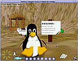
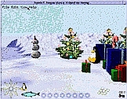
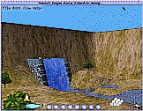
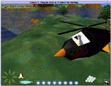
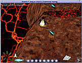

TUXEDO
T. PENGUIN:
A
QUEST FOR
HERRING.
by Steve and Oliver Baker
|

|
Introduction.
Here is an early release of my OpenSource game
starring your Favorite Hero: Tux, the Linux Penguin.
Ob.thanks go to Larry Ewing who painted the original (2D) Tux
image as the Linux Mascot. If you are curious, I have
put together a short history of Tux.
It's taken about a year of hacking in odd evenings to get this far,
and quite a lot of stuff works. Tux's virtual world "works" - he
can walk, swim, fly, ride platforms, teleport, eat herring, throw
snowballs and so on. We are lacking the puzzles and things that
turn it into an enjoyable game - but I don't think those will
be hard to add. So, before you download, note that this is not
yet a finished game.
The Story.
Once upon a time, the world was full of herring and it was a happy time
for Penguins everywhere.
But one dark, stormy night, the Killer Whales and the Leopard Seals
(both long-time enemies of the peace-loving Penguins) decided to join
forces and hide all the herring in places far from where Penguins live.
Soon, Penguins everywhere were starving and a great cry went up
for a hero to come forward and find the hidden herring. But who
could stand up against the Whales and the Seals? Penguins are not
known for their adventurous nature after all.
Very soon, news of the missing Herring appeared on Slashdot and our
heroes Tux and Gown immediately set out for the South Pole, leaving
their duties as Linux mascots to help out their wild cousins.

Our Hero!
|

The South Pole.
|
Fortunately, help was at hand. OpenSource hackers worked day and night
to create teleportation devices to whisk Tux and Gown to the places where
the herring had been hidden. These teleporters are powered by the rare
and valuable Golden Herring which our heroes must find to progress in
their quest.
This angered the Seals and the Whales who thought their plan would
be foolproof and Penguins everywhere would go the way of the Dodo.
They divised a second devious plan and as our starstruck young birds
travelled to the South Pole, one of them was captured by marauding
mammals.
Can our remaining heroic Penguin find the missing Herring? Will our
feathered friends be reunited in the final reel? Their fate is in
your hands.

Penguin Training Camp.
|

The Tuxocopter.
|

*NOT* good for Penguins
|
...
|
Downloading and Installation.
You can download an executable showing the current state of progress
- for now, you'll need EITHER:
- A Linux box with a working OpenGL-based 3D card...OR...
- A Windoze box with a 3D card that runs OpenGL...OR...
- You might well have success with other hardware-based OpenGL
implementations on MacOS or UNIX/Linux/Solaris/BSD.
...AND...
- You really need a joystick with six or more buttons.
A basic two button stick works quite well - and even
just a mouse will work at a pinch...but a six button
gamepad is what I'm designing for.
- You ideally want a sound card - the game has
sound effects and can play background music.
So far, there are only good build instructions for Linux - on
anything else, you are in uncharted terratory.
Your machine has to have:
- Mesa 3.0 or OpenGL 1.1 or later : It has to be a full OpenGL,
with hardware accelleration. Don't even try to run with a
'MiniGL' or 'QuakeGL' or with a software-only implementation.
Don't use a beta version of Mesa - I only test against the
most recent stable version.
- GLUT 3.7 or later : You probably got a copy of GLUT (The
OpenGL Utility Toolkit) with Mesa or whatever OpenGL you
installed. If you didn't then you can get it from
www.opengl.org.
- PLIB : This is my portable games library. You can find that
here. Compile and install it.
Run the SL, JS, FNT, PUI and SSG example programs to be
sure that all is well.
- TUX : Yep - it's time to grab the game itself.
This is a large file, so beware.
Tux the Penguin: A Quest for Herring V1.0.14
WARNING: You need PLIB v1.6.0 or later for
this release of Tux_AQFH.
Gunzip/untar it and read the README file
When you actually come to RUN Tux,
check this document.
Goals
I want to end up with a game that's similar to some of the
console games like Mario'64, Banjo-Kazooie, Gex or Spiro the
dragon. I'd like more emphasis on search-and-explore and puzzle
solving and less on violence and mass killing. Graphical quality
is less important than game-play and fun.
I'd particularly like to end up with a setup where individuals
can design levels and contribute them to the game so that we
all wind up with endless numbers of new levels to play and
enjoy.
I'd also like people to take the game engine and use it to
build entirely new OpenSource games.
Caveats.
This is a beta release and before you start downloading everything,
you should be aware of the current state of development. This is
not yet a finished game - although it is 'playable'.
- At present, there is a simple training level and a short
but hard/complex level. There is a timed 'race' level.
All the other levels are
partly complete or just put there to test aspects of the game
engine.
- Non-player characters. Currently there is a killer whale. That's
it so far.
- Puzzles. There are no puzzles yet - although many of the
mechanisms to BUILD puzzles ARE there.
- The game has now been tested on most 3dfx systems, NVIDIA
cards and the Matrox G200 running a variety of Linux and BSD
versions on a variety of CPU's. There seem to be some
problems with Alpha CPU's. A mostly-working MacOS version
has been created and the Windoze version is reasonably
stable. Tux also runs on SGI hardware under IRIX.
CVS Archives, etc
CVS archives for Tux_AQFH and other developer information
can be found here:
Mailing Lists
There are three TUX_AQFH mailing lists.
In order to keep the spam off the lists, it's set up so you have
to subscribe in order to send mail. To do that, visit:
Please do not send me personal mail in situations when one of
the public mailing lists would be an appropriate forum - I hate
it when people do that.
Steve Baker
<sjbaker1@airmail.net>
http://www.sjbaker.org